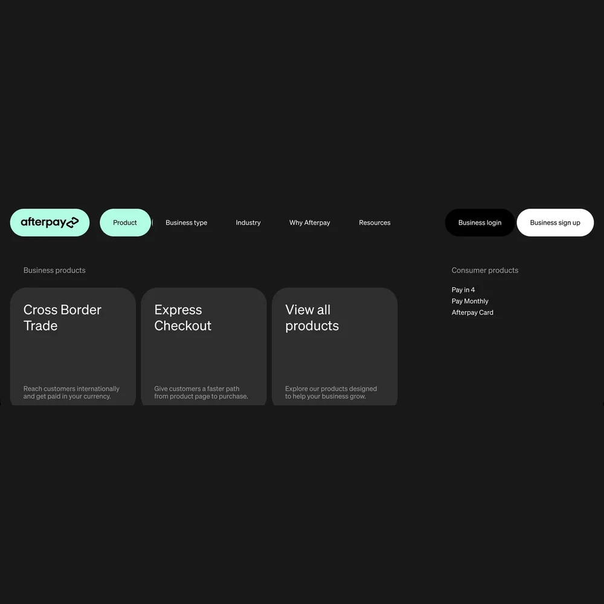
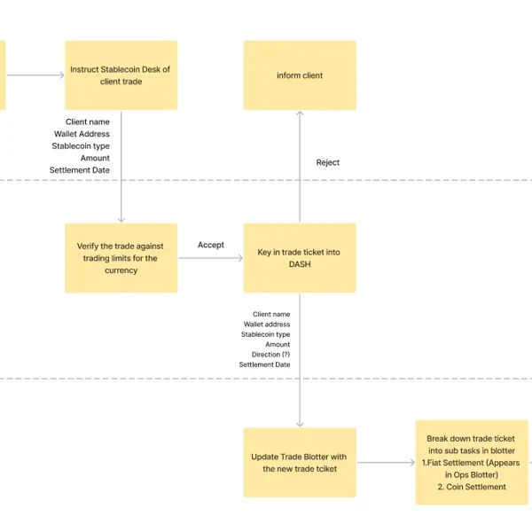
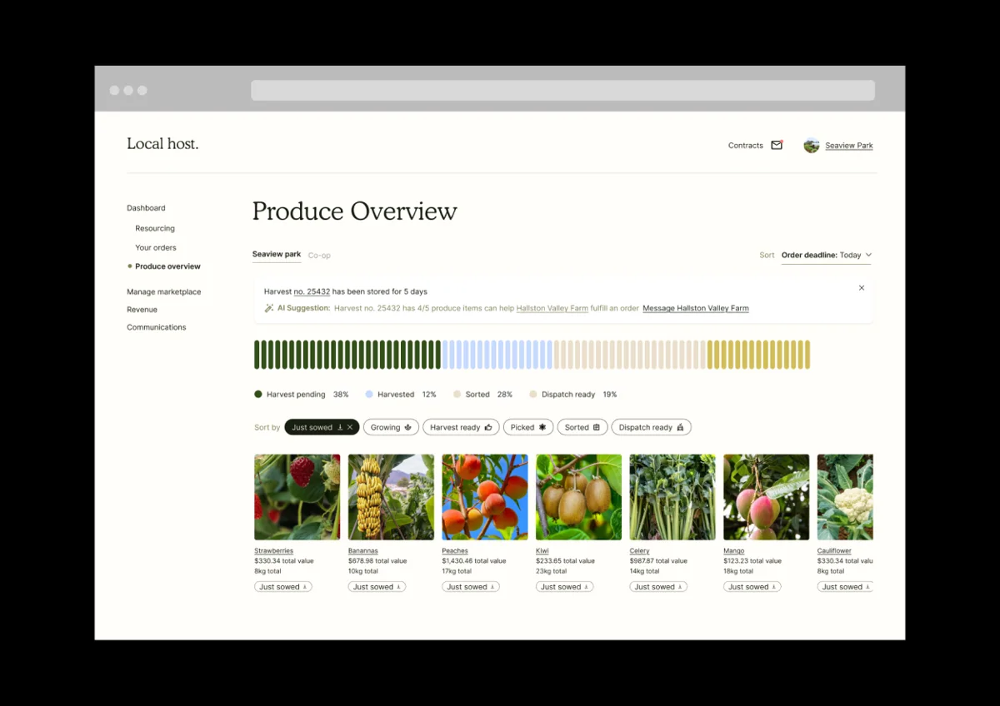
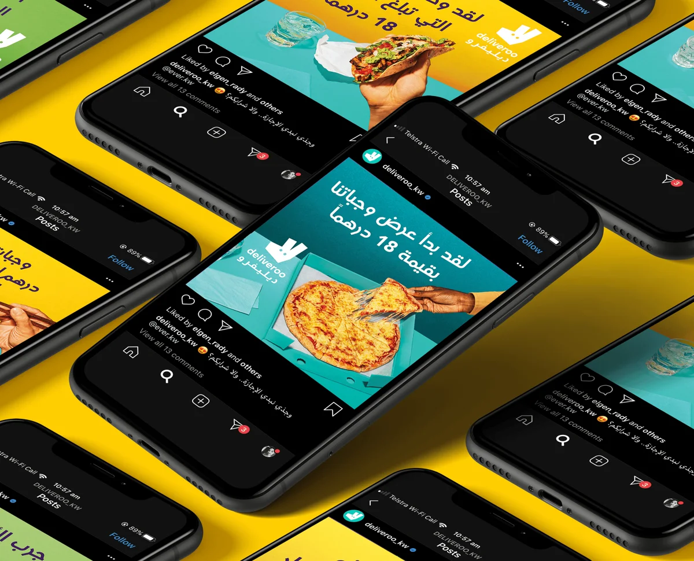
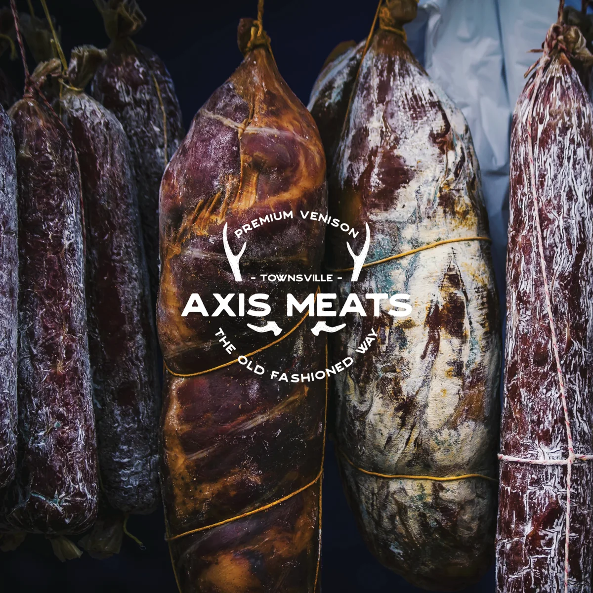
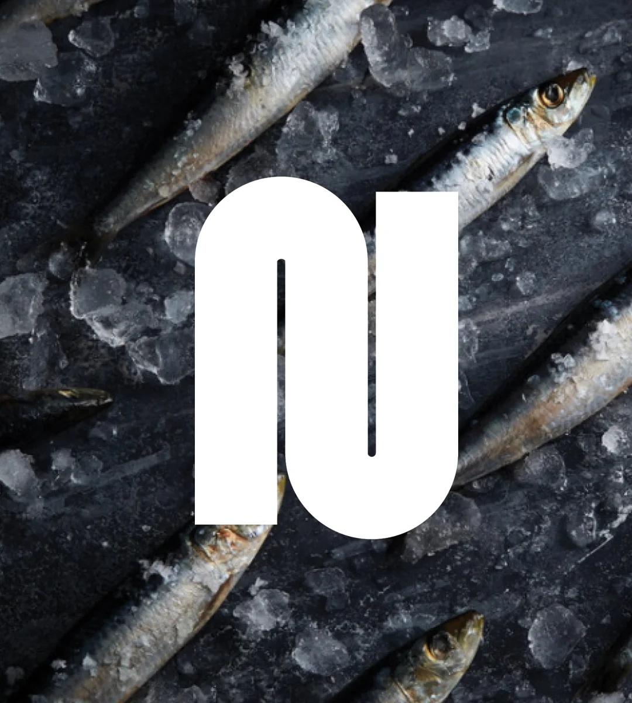
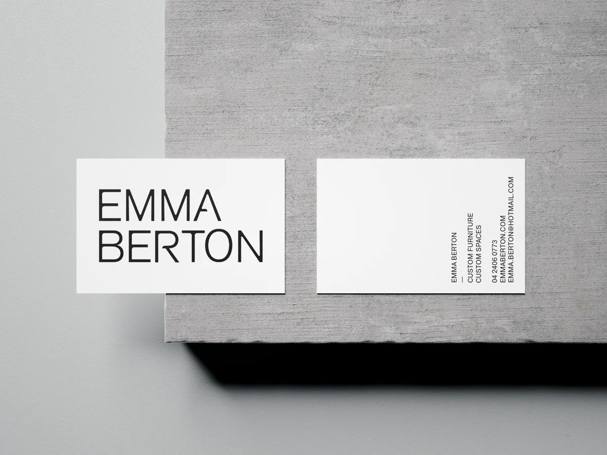
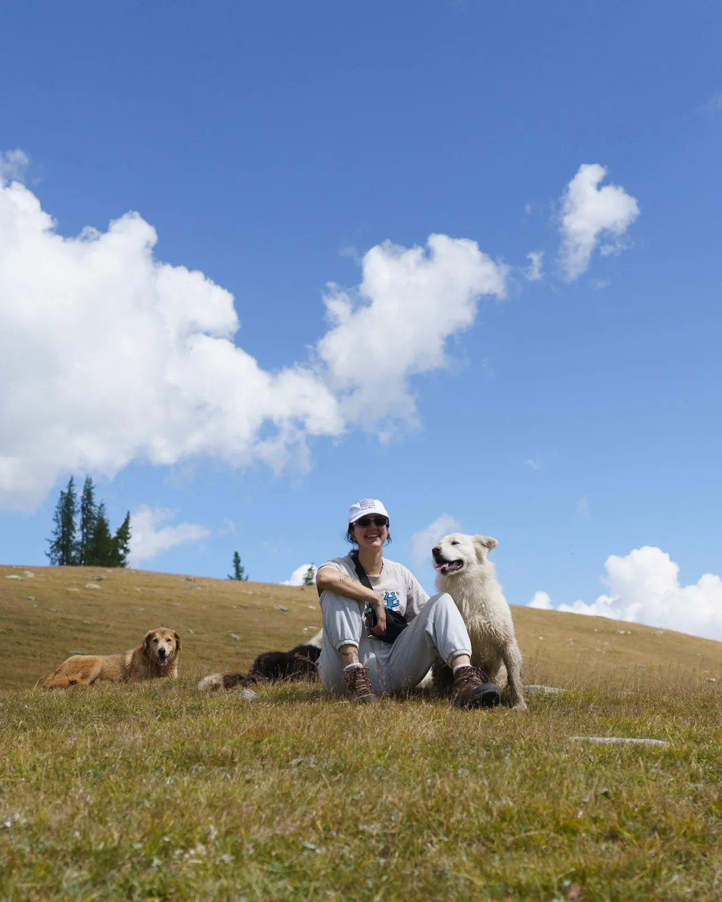

A wise person once said, “to get different results, one must do things differently”.

For industries that deal with complexity, Ro focuses on strategic design and research to find what is actually getting in people’s way, then designs the fix.
More customers is what follows.
Case studies across phases
-
 Full project
Full projectDiscovery
SAF3, a secure crypto custodian
Large institutional and ultra high-net-worth investors needed a secure, regulated way to store and manage digital assets.
-
 Full project
Full projectResearch
Victorian Public Transport, Contactless Ticketing Pilot
The Department of Transport needed the new contactless ticket readers to be intuitive and accessible, without slowing the gates.
-

Full projectExecution
Afterpay’s new B2B site
Afterpay needed a new B2B website for every international market, with many page types for different businesses, all built consistently from one design system.
All work
Product, research and brand projects.
-
Threshold, a booking engine
Salty Cowboy
A booking engine for a horse rescue in Bali that only offers riders the rides that fit them. Designed, built and shipped with AI.
See Project -

CRO tests to generate leads
Afterpay
Setting up Afterpay’s Global CRO (Conversion Rate Optimisation) program, with a UX lens.
See Project -
Afterpay’s new B2B site
Afterpay
Designing Afterpay’s new B2B website for every international market, with AI workflows that go from strategy to wireframes to UI.
See Project -

Legal Document Review Tool
NAB’s Innovation Team
Designing an AI-powered tool (MVP) that streamlines NAB paralegals’ trust deed reviews - cutting average review time from forty five minutes to five.
See Project -
SAF3 MVP
NAB’s Innovation Team x Zodia Custody
Defined the design and research direction for SAF3, an institutional crypto custody solution from NAB and Zodia Custody’s partnership to bridge traditional finance and crypto.
See Project -

Climate Risk Dashboard
NAB’s Innovation Team
Designing for the future of the Australian property market with NAB’s Innovation and Strategy teams.
See Project -
Victoria’s new myki system
Department of Transport and Planning
Working with the Department of Transport and Planning to ensure new myki system meets the needs of Victoria’s general public.
See Project -

Mapping NAB’s Stablecoin (AUDN)
NAB
Mapping NAB’s first-ever stablecoin (AUDN) to assist with gap identification and compliance mapping.
See Project -

Nod
ED.
Having fun with research and concept creation whilst designing to make an impact for service workers.
See Project -

Local Host
Direct-from-farm produce platform
Concept, enabling farmers to manage and sell produce directly to customers.
See Project -

Deliveroo Social Media ads
Deliveroo (UAE)
Social media ads created for Deliveroo’s UAE market, where I was responsible for art-working photography and typesetting.
-

Axis Meats, Identity
Axis Meats, Townsville
Axis Meats is a boutique butcher based in Townsville, specialising in cured meats and authentic biltong made from dried venison. The brand pays homage to a family tradition of biltong curing passed down through generations.
-

Nguyen Dang Photography, Identity
Nguyen Dang Photography
Brand identity made to represent Nguyen Dang’s cutting-edge style of photography.
-

Emma Berton
Custom furniture designer
Melbourne furniture designer Emma Berton’s work embodies Bauhaus-inspired simplicity, practicality, and intentional form. Her brand identity includes a custom word-mark with gentle curves and precise cuts that mirror her design approach.
AI gets me from a messy problem to something real, faster. I use it to widen research, speed up design and ship working products, and I decide where a person needs to stay in charge.
AI workflows I’ve built
-
Wireframe builder
Figma and Claude turn strategy, personas and approved modules into wireframe pages.
Afterpay -
Learn from my edits
Compares my reworked wireframe with the AI draft and updates the workflow so the correction sticks.
Afterpay -
UX to UI
Builds high-fidelity pages and locale variants from real design system components.
Afterpay -
Competitive usability evaluation
Plans, runs and reports competitor reviews using the Nielsen Norman Group method.
Discovery -
Audits, user flows and sitemaps
A documented AI process for competitor audits, user flow and sitemap generation.
Discovery -
Deep research
Gemini Deep Research and research workflows in Claude to widen discovery before decisions are made.
Research -
Design to shipped product
A trilingual booking engine designed, coded, tested and deployed with Claude Code.
Salty Cowboy, Threshold -
This portfolio
Moved out of Figma into code I edit by prompting, so changes and new work go live in minutes.
rowenabaulch.com.au
See it in practice
- Salty Cowboy, now Threshold Designed, built and shipped with AI
- Afterpay’s new B2B site AI wireframe, review and UX to UI workflows
Companies
Nine years across fintech, government, social innovation and global consumer brands.
-
2025 – 2026
Dijitally (Freelance)UX Lead
Dijitally builds and scales digital products for businesses such as Afterpay. I led strategy and design for Afterpay’s new global B2B website and owned its CRO (conversion rate optimisation) strategy. I also worked directly with the founder to design and implement new features in the booking engine, Roomstay.
-
2025
Today (Freelance)Strategic Designer
Today is a design and technology agency for social innovation, contracted by the Department of Transport and Planning to research Victoria’s new myki readers. I ran longitudinal and ethnographic studies to uncover customer trends and accessibility needs, led research operations and delivered the final report to the department.
-
2022 – 2025
NAB Innovation TeamProduct Designer
NAB’s innovation team works apart from the wider bank to move and test quickly. I used design to identify the biggest disruptive threats and opportunities for the bank across climate, payments, AI and crypto, designed and delivered NAB’s first crypto-based MVP for institutional customers, and built an AI tool for paralegals that cut trust-deed review from 45 minutes to 5.
-
2021 – 2022
ED.UX/UI Designer
ED. is a digital agency crafting original ideas and web applications for clients from universities to NGOs. I led evaluative customer research for Athena Home Loans and designed The Sydney Dialogues website.
-
2019 – 2021
DeliverooAPAC Designer
A global food delivery company founded in the UK, where I worked primarily with the UK and global teams. I designed multilingual digital campaigns, including Arabic and Cantonese, and optimised content with global marketing to lift click-through rates.
-
2017 – 2018
HM.Designer
HM is a strategic brand and communication agency serving clients from government to aged care. I designed wayfinding for Metro and PTV.
Beyond work
Outside of work, I’m an avid explorer drawn to adventures. Pictured here is a moment from my stay in Mongolia with a family of eagle hunters (sadly not pictured). Back home, I spend my time climbing, life drawing, hiking, and experimenting with photography.
